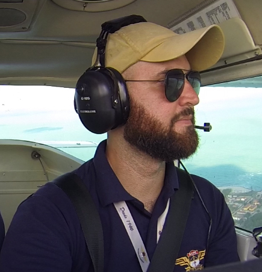

Projetos diferenciados, eventos, comboios no Euro Truck, carros raiz, opinião sem filtro e muita resenha automotiva. Se você curte motores, estrada e velocidade — seu lugar é aqui.

Sou piloto de avião e entusiasta das máquinas que voam baixo. O Cupim de Lata nasceu da paixão por motores, velocidade, estrada e tudo aquilo que envolve cultura automotiva de verdade — dos carros antigos aos projetos duvidosos que sempre rendem história.
Aqui a ideia é simples: criar conteúdo, trocar experiências e construir uma comunidade onde todo mundo compartilha a mesma paixão.
Carros antigos, projetos diferenciados e aquelas lasanhas que todo mundo ama. Conteúdo automotivo de verdade, sem frescura.
Coberturas de encontros automotivos, feiras e eventos. O Cupim de Lata sempre presente onde a galera se reúne.
Euro Truck Simulator 2, Assetto Corsa, Drift Racing Online e muito mais. Simulação com a energia da comunidade.
Reacts, papos sobre mercado automotivo, tendências e aquela opinião direta que todo mundo quer ouvir.
Toda quinta-feira a comunidade se reúne para viajar pelos mapas brasileiros no Euro Truck Simulator 2. Resenha e diversão garantida.
Aquele projeto que ninguém entende mas todo mundo acompanha. Som automotivo, mecânica e os builds mais únicos do Brasil.
Toda quinta-feira a comunidade se reúne para pegar estrada nas tradicionais Lives de Quinta do Cupim de Lata. Os comboios acontecem dentro do Euro Truck Simulator 2, reunindo a galera para viagens, resenha, desafios e muita diversão.
Os eventos são abertos para a comunidade e acontecem em um ambiente descontraído, onde o foco principal é se divertir, conhecer pessoas e aproveitar a experiência de viajar junto com a galera.
Euro Truck Simulator 2 · Mapa BR
O Cupim de Lata não é apenas um canal de conteúdo automotivo. É uma comunidade construída para aproximar pessoas que compartilham os mesmos interesses, criar amizades, trocar experiências e viver momentos únicos.
Seja no Discord, nas lives ou nos encontros, sempre existe espaço para mais um apaixonado por motores.
Entre para o Discord oficial e faça parte da comunidade automotiva mais animada do Brasil.
🔗 Entrar no DiscordSempre tem espaço para mais um apaixonado por motores.